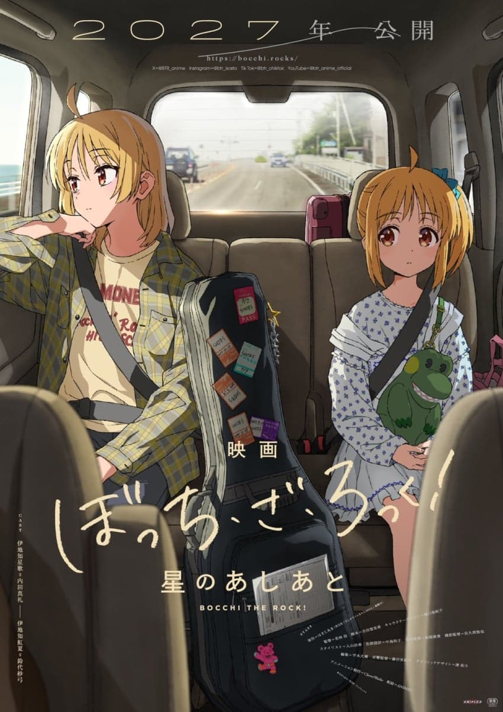
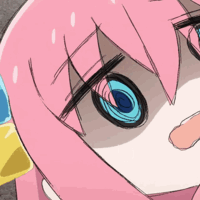
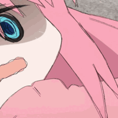
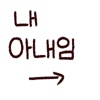

평이 좋았던 니지카 자매 단편 극장판으로 나오나봄 ㅋㅋㅋ
2기는 28년에 나오려나보다

감독: 와카바야시 신
- 원더 에그 감독
캐릭터 디자인: 호리구치 유키코
- 쿄애니 출신, 케이온 캐릭터 디자인
각본: 요시다 에리카
- 봇치 1기 각본가
애니메이션 제작: CloverWorks
2027년 공개
평이 좋았던 니지카 자매 단편 극장판으로 나오나봄 ㅋㅋㅋ
2기는 28년에 나오려나보다

감독: 와카바야시 신
- 원더 에그 감독
캐릭터 디자인: 호리구치 유키코
- 쿄애니 출신, 케이온 캐릭터 디자인
각본: 요시다 에리카
- 봇치 1기 각본가
애니메이션 제작: CloverWorks
2027년 공개
봇치 작가가 전에 그린 니지카 단편 있는데 그거 극장판인듯?
니지카 단편 외전을 영화로 만든 것같아요
니지카 관련 스토리인가?
그 tv판 압축버전이 아니라 새극장판이 나온다고?
애니 총집편이 아니라 새로운거겟지?
28년에 2기 뜨겠네
야호!!!
'이것은 내가 고아가 되는 이야기다.'
아빠 계신다고
엄마 패드립만 면역이라고
???: 아아… 그 사람?
2기가 아니라 프리퀄이라니
봇치가 안 나오니까 앞으로는 더락이라고 해라
" 악성재고 "


관객수 3000명

2기부터 만들어 시발롬들아
감독이 좀 그런데?
니지카 너무조아
진짜 봇치더락에서 저 노란머리가 제일 꼴리는데 꼴알못들 존나많더라..
히토미에 양아치랑 사귀는 만화가 ㄹㅇ
맞어 금태양한테 꼬심 당해서 태닝하고 몸에 문신하는 만화가 꼴리긴하더라

근데 지랄말고 그냥 2기나 만들면 좋겠어
작화나 각본은 괜찮은데 감독이 약간 미묘한 양반이네. 잘 나올라나.
저 스토리로 90분짜리가 나오려나
니지카 과거이야기 아예 극장판으로 따로 풀어버리려나보네
니지카 악성굿즈 처리를위한 삐라 살포
근데 원더에그 개말아먹었는데 괜찮을라나
니지카 편은 만신 그자체임
뭔 내용이길래
오늘 라이브 개재밌었다
와 보지더락!
이러다 키쿠리 외전 애니가 2기보다 먼저 나오는 거 아님? ㅋㅋㅋㅋ
과거편임?
봇치더락은 키타가 주인공이라고 생각해요
그 단편이 극장개봉할만큼 분량이 나오나
2기 언제나옴 ㅅㅂ
오른쪽이 니지카라는애임?
완전 신작임??